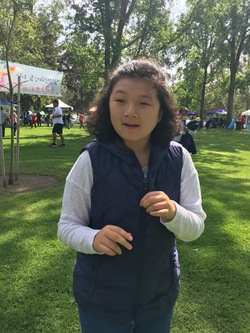
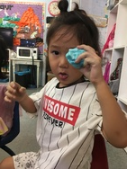
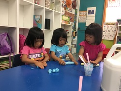

Christina Kwon
Hello! I am Christina Kwon. I am currently a second year
psychology student attending the University of California Riverside. I am currently working as a cashier at
the Prinkapia yogurt stand in Tyler Mall. I am also currently looking for a entry level position as a behavioral
instructor at a company named A Change in Trajectory. I hope to pursue occupational therapy specialized in children
with mental disabilities as my future occupation. I have experience working with children as well as children with physical
and mental disabilites. All throughout highschool, I vounteered at a non=profit organization called SCA Milal Camp Agape. Milal
is a camp dedicated to helping children with mental and physical disabilites develop their motor skills, social skills, and fine
motor skills. In order to do this, the "buddies" were paired up with volunteers such as myself and we would do activites with them.
For example, to work on their motor skills, we would play games with them like soccer or basketball, as well as go for walks and swim.
In addition, we would make obstacle courses for them and dance. To work on their fine motor skills, we would do crafts and painting
as well as small things incorporagted into the motor skill activites. Lastly, for their social skills, we would go on outings to the zoo,
park, mall, amusement parks, and hotels. Every year, the program would host a large retreat where just the buddies and their parnters would
spend two nights and three days at a hotel and have a convention where we would meet with all of the other branches in Southern California.
At these camps, we would have proms and parties as well as other large events for the buddies to expereince as it is difficult for them to
expereince outside otherwise. At camp, volunteers would be responsible for taking care of their buddy for the entire three days with limited
supervision. This would mean that we would have ro take care of their personal and physical needs. In my case, my buddy was nonverbal and had
severe autism. I had to take care of her personal needs as well as feeding and changing her. In my other job expereince, I worked as an after-school
teacher. I looked after kindergardeners to second graders. At this after school, I would look after their homework, do some lesson plans, and provide
tutoring to individuals. My lesson plan would consist of reviewing their class material and lessons from school as well as lessons from their
supplemental material provided from the afterschool. After we finished homework and studying for their tests and quizzes, we would play games
or do activites such as hang-man or bingo, or play with board games. At this afterschool, not only did I interact with the children, but I leanred to
communicate with their parents and let them know how their children are doing academically and socailly as well as behaviorally. In addition, I would
communicate in the same way to the Milal parents. Through these programs as well as brief internships at other preschools and childcare centers, I leanrned
that I have a passion for teaching and helping children. I love children and I plan to have an occupation that works with children in the future.
Experience
Teacher
• Oversaw elementary students ranging from kindergarten to second-grade language arts and mathematics with homework and acceleration material
•Individually tutored middle school and elementary students English and mathematics
Volunteer
•Assisted autistic individuals in developing fine and motor skills
• Attended camps designed to help developmentally disabled children practice life and social skills
Education
UC Riverside
Portfolio

.jpg)

